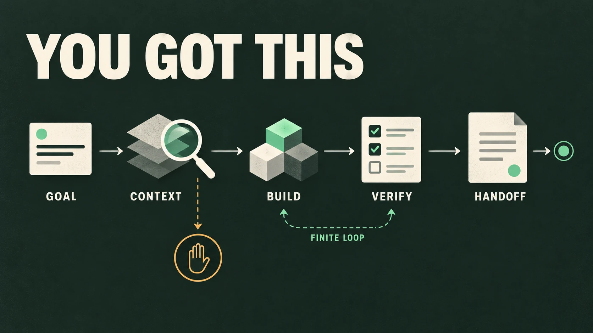

Turn “make this really good” into a concrete, scoped change. Your agent reads the project, follows the real flow, builds the smallest complete solution, and verifies what it can actually observe.
Your intent stays central. Important decisions stay yours.

A clear endpoint, with room for a meaningful second pass.
Less ambiguity. More evidence.
What changes in the conversation
Illustrative examples of the workflow, not recorded results or performance promises.
Finish a rough prototype
Before · intent
$you-got-this make this prototype ready for a public demo
After · expected approach
Trace the main journey. Fix the most important incomplete states. Inspect the real interface, run relevant checks, and report what still needs a live test.
Fix a specific flow
Before · intent
$you-got-this fix checkout retry without changing the payment flow
After · expected approach
Inspect existing retry and error handling. Reuse the project’s patterns, make a focused fix, and verify the failure path while preserving your constraint.
One coherent workflow
Context before code. Evidence before “done.”
Understand
Read governing instructions, code, docs and tests. Trace the affected flow and infer safe missing details.
Set the bar
Translate “good” into observable checks that fit this project: behavior, visual output, recovery or accessibility.
Build
Make the smallest complete change. Reuse architecture and dependencies. Preserve product intent.
Verify & hand off
Inspect the integrated result. Run relevant checks. State changes, evidence, risks and unverified gates.
Choose the depth
Normal by default. Gauntlet when it matters.
01 / Normal
Execute a scoped goal
$you-got-this <goal>
Understand, implement, test and review. Stop when no important in-scope gap remains, further work has diminishing value, or progress needs a real decision or capability.
02 / Gauntlet
A stronger, finite quality pass
$you-got-this gauntlet <goal>
Use a stronger reference. Build → fresh critique → fix the largest meaningful gap → re-check. Repeat only while actionable, in-scope gaps remain.
Fresh critics depend on host support. No endless loop or automatic release approval.
03 / Audit
Inspect before changing
$you-got-this audit [area]
Report prioritized findings with evidence and a useful next step. Major implementation happens only when the request also asks for it.
“gauntlet” and “audit” select a mode only as the first argument.
A Markdown skill, not a service
Install. Start a session. Give it a goal.
You need Git and Codex, or a compatible agent harness that loads SKILL.md. Real verification also needs the project’s tools and relevant access. This repository adds no runtime dependencies.